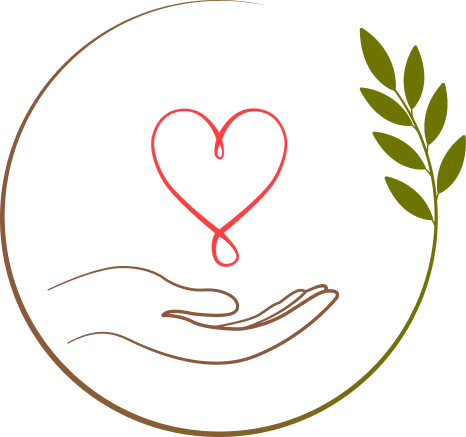
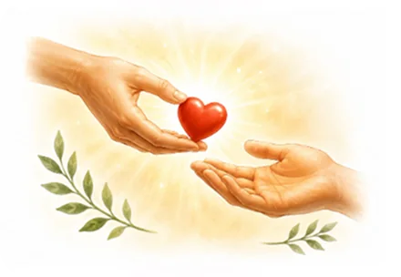
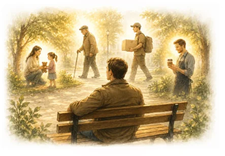

To gest wolności
Gdy ktoś daje coś bez oczekiwania zapłaty, często pojawia się w nas odruch natychmiastowego rewanżu. Gest Dobra zatrzymuje tę kalkulację. Pozwala przyjąć dobro bez poczucia, że trzeba od razu „wyrównać rachunek”.
Gest Dobra to bezinteresowny gest człowieka wobec człowieka.

Ktoś zrobił dla Ciebie coś dobrego bez oczekiwania zapłaty lub rewanżu.
Nie jesteś nic winien.
Jeśli kiedyś będziesz miał możliwość, przekaż dobro komuś innemu w podobny sposób.
Gdy ktoś daje coś bez oczekiwania na zapłatę, często pojawia się w nas odruch natychmiastowego rewanżu. Gest Dobra zatrzymuje tę kalkulację. Pozwala przyjąć dobro bez poczucia, że należy od razu „wyrównać rachunek”.
Gdy ktoś daje coś bez oczekiwania zapłaty, często pojawia się w nas odruch natychmiastowego rewanżu. Gest Dobra zatrzymuje tę kalkulację. Pozwala przyjąć dobro bez poczucia, że trzeba od razu „wyrównać rachunek”.
Gest Dobra nie jest przeznaczony wyłącznie dla tych, którzy potrzebują pomocy, są słabsi albo znajdują się w trudnej sytuacji. Jest dla człowieka. Dla każdego. Nie klasyfikuje, nie ocenia i nie segreguje.
Gest Dobra nie jest akcją marketingową, rabatem ani gratisem. Może przyjąć formę przekazanego produktu, usługi, opłaconego rachunku, pomocy, poświęconego czasu, uwagi, obrony kogoś słabszego lub cichego rozwiązania czyjegoś problemu.
Dobro nie powinno rodzić nowych problemów. Gest Dobra to wyraz życzliwości i nie może stanowić ciężaru dla Ciebie ani Twoich bliskich. Nie wielkość gestu ma znaczenie, lecz intencja i gotowość do mądrego dzielenia się dobrem na miarę własnych możliwości.
Gestu Dobra nie można żądać, wyłudzać ani oczekiwać jak należności. Jego istotą jest dobrowolność. Stanowi wolę osoby ofiarowującej i zaproszenie dla osoby obdarowanej.
„To nie promocja ani akcja okresowa. To zasada: jeśli chcesz, podaj dalej”.
Nie potrzebujesz wielkich środków. Wystarczy jeden konkretny gest dobra, wykonany bez oczekiwania na wdzięczność, uznanie albo zapłatę.
Ktoś zrobił dla Ciebie coś dobrego. Bez żadnych zobowiązań – nie dlatego, że na to zasłużyłeś albo że odwzajemnisz gest. Przyjmij ten dar. Być może kiedyś dzięki Tobie dobro trafi do kolejnej osoby.

Rozejrzyj się. Kto obok Ciebie potrzebuje pomocy, czasu, uwagi, wsparcia – zwykłego ludzkiego gestu? A może jest ktoś, komu chcesz okazać dobro bez szczególnego powodu? Albo ktoś, o kim wiesz, że przekaże je dalej?

Zrób coś dobrego na miarę swoich możliwości. Tylko po to, by dać komuś innemu szansę doświadczyć dobra. Jeśli wręczysz kartę Gestu Dobra, stanie się ona symbolem tego gestu i zaproszeniem do przekazania dobra innym. Właśnie w ten sposób Gest Dobra trwa.
Gest Dobra może przybrać materialną formę, ale jego najczystszy wymiar ujawnia się wtedy, gdy nikt poza obdarowanym o nim nie wie.
Możesz poprosić kelnera, aby rachunek za posiłek losowych gości restauracji został doliczony do Twojego rachunku. Gdy o niego poproszą, kelner może powiedzieć: „To jest Gest Dobra. Dziś Państwo nie płacą. Nie są Państwo nic winni. Jeśli kiedyś zechcą Państwo zrobić coś dobrego dla kogoś innego, proszę przekazać dobro dalej”. Jeśli jednak nie zechcą przyjąć daru, mają pełne prawo zapłacić za siebie.
Możesz podzielić się swoim czasem, wiedzą lub umiejętnościami. Pomóc komuś w trudnym zadaniu, przygotować współpracownikowi drugie śniadanie, zaprosić go na obiad albo wesprzeć go w trakcie trudnego dnia. Czasem wystarczy po prostu zrobić dla kogoś coś dobrego – bezinteresownie.
Możesz porozmawiać ze starszą osobą, pomóc w drobnej sprawie technicznej, wypełnić komuś formularz, odśnieżyć fragment chodnika, skosić trawę, zaopiekować się dziećmi sąsiadów, aby mieli chwilę dla siebie, albo zrobić coś, co pozytywnie wpłynie na codzienność ludzi wokół Ciebie.
Możesz wykonać drobny gest w stronę zupełnie obcej osoby: kupić komuś kawę, opłacić bilet albo sprawić małą niespodziankę. Tylko po to, by podzielić się życzliwością.
Gdybyś jutro miał zrobić jeden gest, którego nikt nie zauważy, nie nagrodzi i nie rozliczy — co by to było i komu byś go ofiarował?
Podaruj go. To może być Twój Gest Dobra.